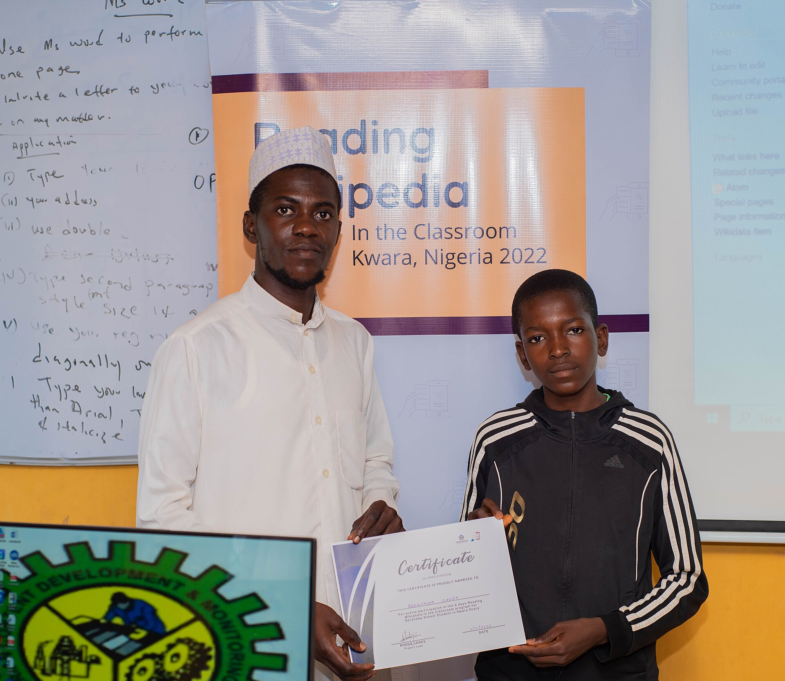
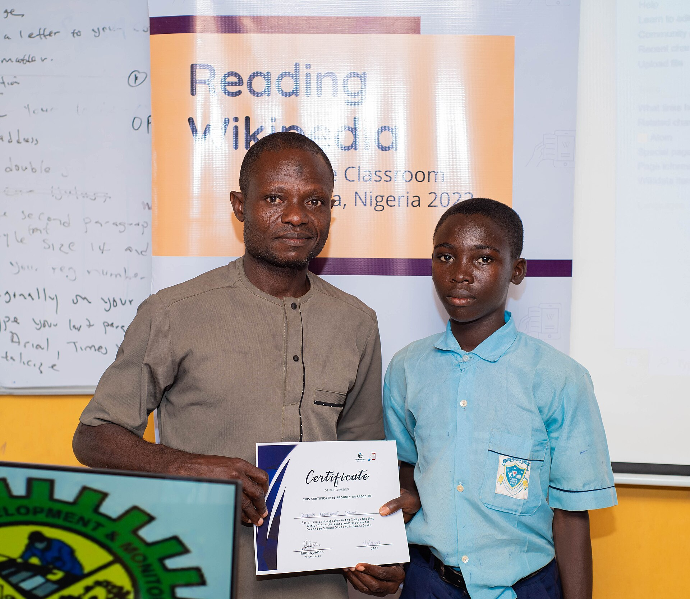

DICAS DE ESTUDO
Técnicas de estudo
Conheça métodos práticos e escolha combinações que ajudem você a compreender e lembrar cada matéria.
Introdução
Uma técnica é uma ferramenta, não uma fórmula mágica. A melhor escolha depende do objetivo: lembrar conceitos, resolver problemas, compreender uma leitura ou organizar anotações. Experimente por algumas sessões, confira se está aprendendo e ajuste. Em geral, combinar estudo ativo, prática e revisões distribuídas é mais útil do que apenas reler.
1. Pomodoro e método Cornell
Pomodoro: escolha uma tarefa e trabalhe em um bloco de foco seguido de uma pausa. O exemplo tradicional usa 25 minutos de atividade e 5 de descanso, mas você pode ajustar o tempo. Funciona bem para iniciar tarefas e organizar pausas; não é necessário interromper um raciocínio importante só porque o cronômetro tocou.
Cornell: divida a folha em uma coluna ampla para anotações, uma coluna estreita para palavras-chave ou perguntas e um espaço inferior para síntese. Durante a aula, registre ideias principais e exemplos; depois, transforme os tópicos em perguntas e escreva um resumo curto. O método ajuda a revisar, mas as anotações devem ser complementadas se algo ficou incompleto.

2. Active Recall e revisão espaçada
Recuperação ativa (Active Recall): tente responder a uma pergunta sem olhar o material. Depois confira, corrija e marque o que precisa rever. Pode ser usada em história, ciências, idiomas e matemática: explicar um conceito ou refazer uma questão sem consultar são exemplos.
Revisão espaçada: retome o conteúdo em sessões separadas por intervalos, em vez de concentrar toda revisão em uma única noite. Planeje retornos no dia seguinte e nos dias ou semanas seguintes, ajustando o intervalo à dificuldade. O benefício está em tentar recuperar e praticar de novo, não apenas reler rapidamente.
3. Mapas mentais e técnica Feynman
Mapa mental: coloque o tema no centro e conecte conceitos, exemplos e relações. Use palavras-chave, não parágrafos longos. Depois esconda o mapa e tente reconstruir as conexões ou explique por que cada ramo se liga ao tema. É útil para organizar assuntos relacionados, mas não substitui exercícios quando a matéria exige resolver problemas.
Técnica Feynman: escolha um conceito e explique-o em linguagem simples, como para alguém que ainda não estudou o assunto. Ao encontrar uma lacuna, volte à fonte, esclareça-a e tente explicar novamente com um exemplo. Simplificar não significa distorcer: mantenha as condições e os detalhes importantes.

4. Resumos, exercícios e estudo intercalado
Resumos eficientes: selecione ideias centrais e escreva-as com suas palavras. Use títulos, relações e exemplos; evite copiar o livro inteiro. Ao terminar, feche o material e veja se consegue explicar o resumo sem consultar. Se não, volte às partes confusas.
Exercícios práticos: resolva questões, compare com critérios de correção e analise cada erro. Comece com exemplos guiados e retire gradualmente a ajuda. Estudo intercalado: alterne tipos de problema ou matérias relacionadas depois de entender o básico de cada uma. Isso treina escolher a estratégia adequada, embora possa parecer mais difícil do que repetir o mesmo modelo.
5. Escolha técnica para cada objetivo
- Conceitos e definições: perguntas de recuperação ativa e flashcards curtos.
- Matemática e física: exemplos resolvidos, exercícios graduais e análise dos passos.
- Leitura e história: notas Cornell, perguntas sobre relações e resumo com suas palavras.
- Assuntos conectados: mapa mental seguido de explicação sem consulta.
- Procrastinação ou distração: bloco de foco ajustável com uma tarefa pequena.
Erros comuns
Escolher uma técnica porque parece bonita, mudar de método sem avaliar resultados, copiar resumos sem pensar e usar uma única estratégia para todas as matérias. Pergunte se a técnica está aproximando você do objetivo e se consegue explicar ou aplicar o conteúdo.
Resumo
Pomodoro organiza o tempo; Cornell estrutura anotações; Active Recall testa a lembrança; revisão espaçada distribui retornos; mapas e Feynman organizam explicações; resumos, exercícios e intercalação ajudam conforme a matéria. Combine métodos de forma simples e avalie o que aprendeu.

Conclusão
Escolha uma técnica e use-a em um conteúdo real nesta semana. Depois verifique o que consegue lembrar, explicar ou resolver. As melhores ferramentas são aquelas que apoiam seu aprendizado e podem ser adaptadas à sua rotina.